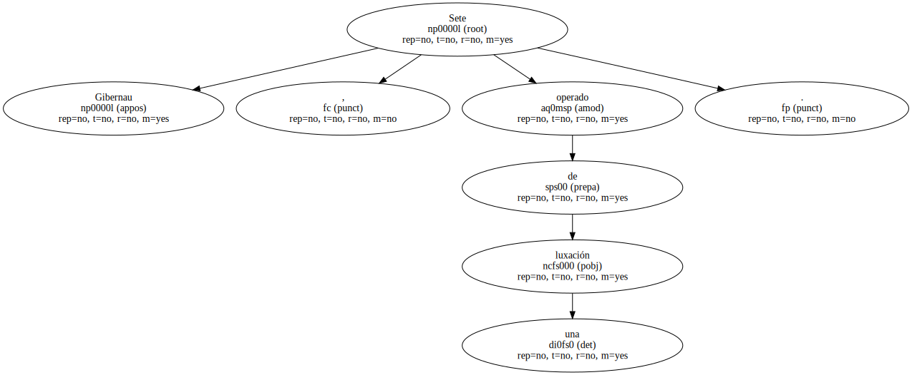
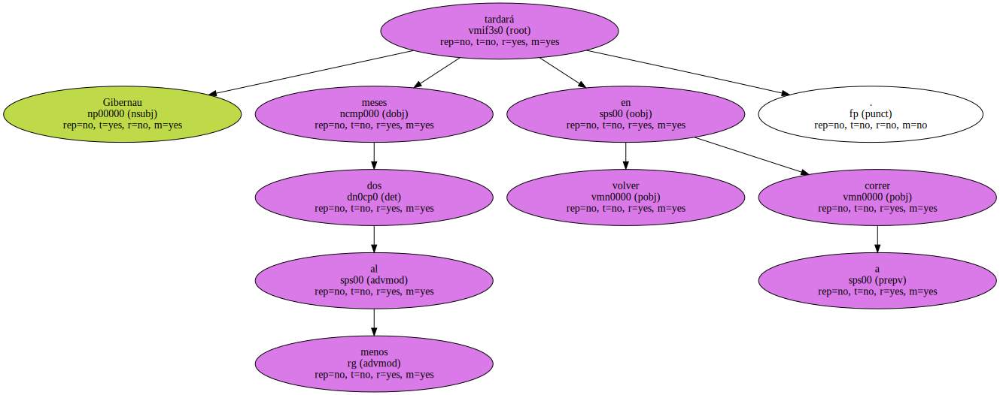

Sete Gibernau , operado de una luxación.
El piloto barcelonés de Honda , compañero de equipo de Alex Crivillé , campeón del mundo de 500cc , fue operado ayer en el Instituto Universitario Dexeus de Barcelona de una luxación en el hombro izquierdo tras una caída en los ensayos de Jerez.

Gibernau tardará al menos dos meses en volver a correr.
